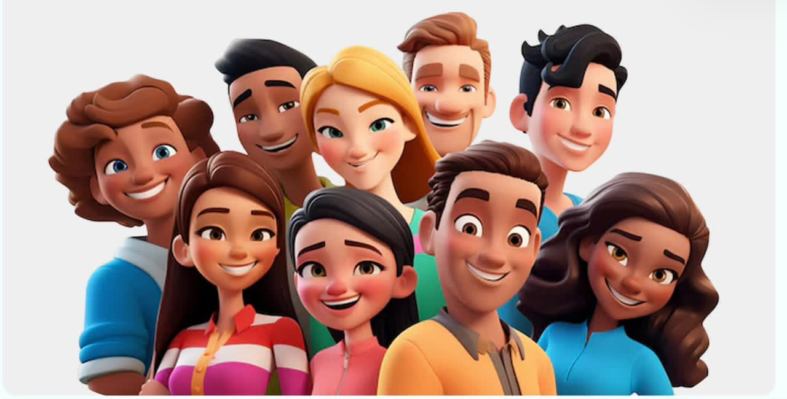
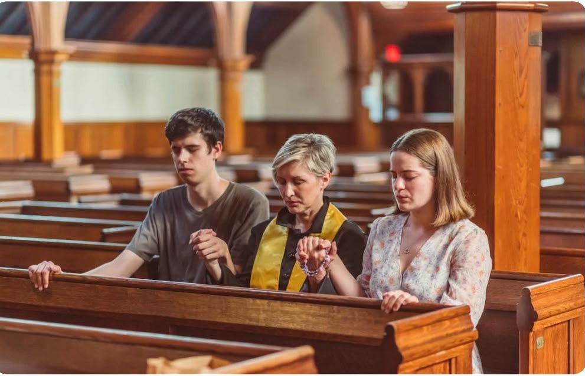

✦
Your Gift Is Not Just Skill, It’s Ministry.
At Christ Tech, We Equip Christian Technologists To Use Their God-Given Talents For Service, Impact, And Faith-Driven Innovation.

We Are Christ Tech — A Movement of Faith-Fueled Builders.
We unite Christian tech minds to glorify God and serve the world through purpose-driven innovation.

+
Our Mission
To equip and connect Christian technologists to create impactful, faith-driven solutions that glorify God and serve the world with excellence.
+
Our Vision
To see a thriving global community of believers using technology to advance the gospel, inspire innovation, and drive lasting kingdom impact.

Blog
Voices at the Intersection of Faith and Technology
Explore inspiring stories, practical insights, and powerful ideas that equip Christian technologists to innovate with purpose and impact the world for Christ.
▶